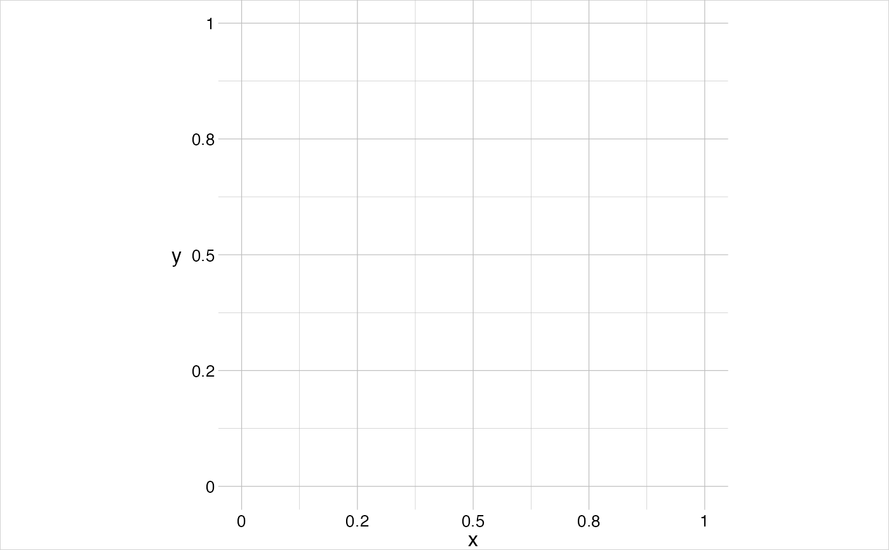
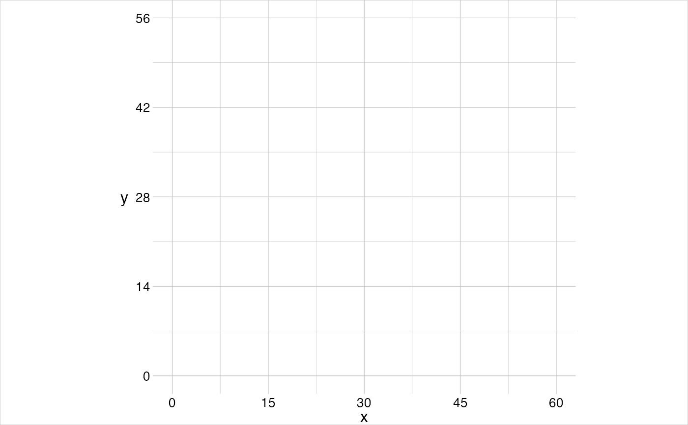
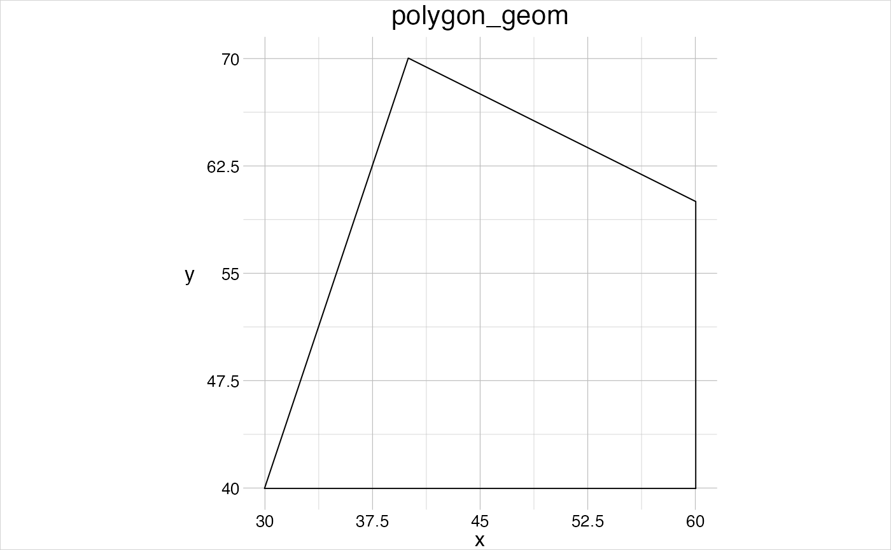
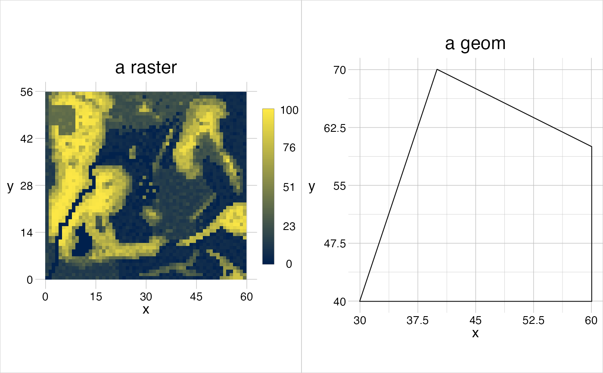
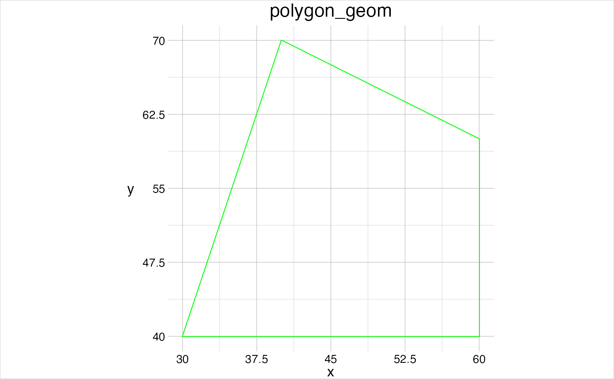
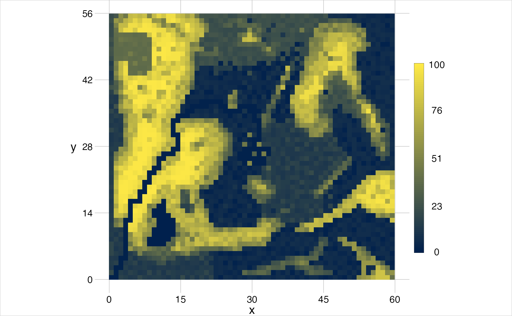

Visualise geometric objects
visualise( ..., window = NULL, trace = FALSE, new = TRUE, clip = TRUE, theme = gtTheme )
Arguments
| ... | objects to plot and optional graphical parameters. |
|---|---|
| window | [ |
| trace | [ |
| new | [ |
| clip | [ |
| theme | [ |
Value
Returns invisibly an object of class recordedplot, see
recordPlot for details (and warnings).
Examples
# make an empty plot visualise()coords <- data.frame(x = c(30, 60, 60, 40), y = c(40, 40, 60, 70), fid = 1) (aGeom <- gs_polygon(anchor = coords))#> geom polygon #> 1 group | 1 feature | 5 points #> crs cartesian #> attributes -- #> tiny map 70 #> ◌ ◎ ◌ ◌ #> ◌ ◌ ◌ ◎ #> ◌ ◌ ◌ ◌ #> 30 ◉ ◌ ◌ ◎ 60 #> 40visualise(aGeom)win <- data.frame(x = c(0, 80), y = c(0, 80)) withWindow <- setWindow(x = aGeom, to = win) visualise(expanded = withWindow)(aRaster <- gtRasters$categorical)#> class : RasterLayer #> dimensions : 56, 60, 3360 (nrow, ncol, ncell) #> resolution : 1, 1 (x, y) #> extent : 0, 60, 0, 56 (xmin, xmax, ymin, ymax) #> crs : NA #> source : memory #> names : categorical #> values : 1, 47 (min, max) #> attributes : #> id cover #> from: 1 lake #> to : 47 mixed forest #># plot several objects together visualise(aRaster, aGeom)# give names visualise(`a raster` = aRaster, `a geom` = aGeom)# use graphical parameters ... visualise(aGeom, linecol = "green")#>